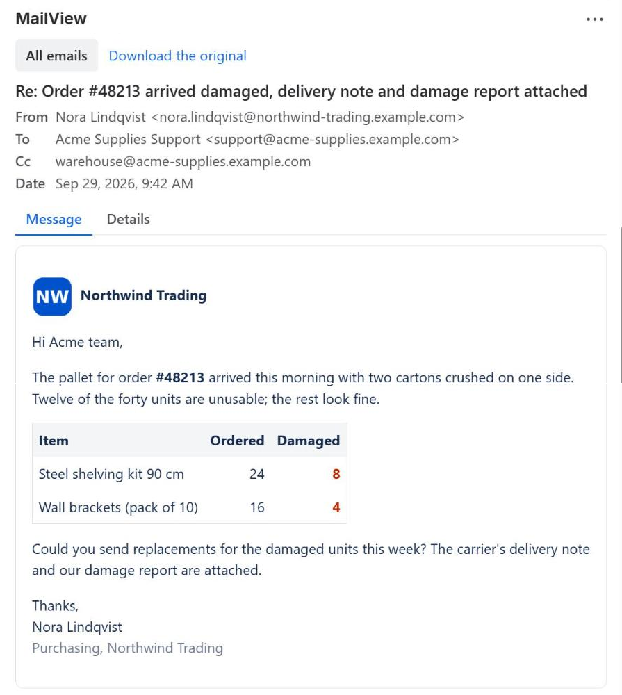
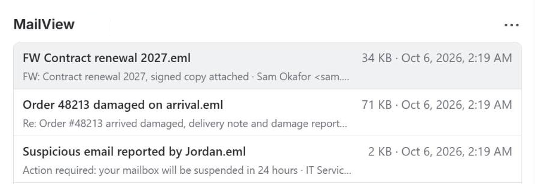

MailView · Jira app
An email you can't read is a ticket you can't finish.
A customer forwards a thread, a colleague drags an Outlook message onto a ticket, a migration brings years of .msg files along. Jira shows them as code or raw text, so everyone downloads the file and opens it somewhere else. MailView shows the email right there on the work item. For emails someone reports as suspicious, it also tells you in plain English whether it looks like phishing, and why.
Free for up to 10 users. On a Jira Service Management site, agents count as users; portal customers don't. Runs on Atlassian Forge: the email never leaves your Jira.

What MailView shows
The email from the file, with nothing added and scripts and forms taken out. No copies, no storage, no external services.
The email as it was sent
Subject, from, to, cc and date, with the body formatted the way the sender wrote it. Long recipient lists are folded.
Outlook .msg and standard .eml
Both formats, including .msg files that only carry RTF. The app looks at the bytes, not the file extension.
Inline images, safe by default
Images that travel inside the email are shown. Images from the internet are blocked, and a single line tells you so.
Files inside the email
Attachments inside the email appear as tiles with name, type and size, ready to download. An email inside an email opens in place.
A details tab for the headers
Every header, the SPF, DKIM and DMARC results recorded by the receiving mail server, and the address behind every link (short links and redirects are not followed). If the link text names one domain and the link goes to another, MailView says so.
Only on work items with email
Only shows up where an attachment could be an email: .eml, .msg, or a file without a known file type, such as a forwarded email without a file name.
Forwarded from Outlook without a file name? MailView recognizes the email by its headers and shows it anyway.
For IT service desks: phishing triage
"Is this legit?" Answered on the work item
An employee forwards a suspicious email to the service desk. Instead of downloading the file and opening it in Outlook, the agent opens it in MailView and gets a verdict, Likely phishing, Be careful, Looks OK or Not enough to judge, with the reasons underneath.
What it checks
SPF, DKIM and DMARC results from the email's headers. A Reply-To address on a different domain than the sender. Sender and link domains with lookalike letters from other alphabets or with accents (punycode); a typo in plain letters, such as paypa1.com, is not caught. Links whose visible text names one domain while the link goes to another, and links with no readable text. Risky attachments: executable and script files, HTML and SVG files that can open a web page or a form, and archives that contain such files.
Copy findings
One button puts a short, defanged summary of the findings in the clipboard, ready to paste into the ticket comment. Links in the summary are written so nobody clicks them by accident.
Safe to open
The email is rendered with scripts, forms and remote images removed, so reading a reported email in MailView does not tell the sender it was opened and cannot run anything.
The verdict helps the person triaging the email; it is not a security control and can miss things. The Details tab shows every header and every link so you can check for yourself.
Want to try the check first? The free email check runs in your browser and uploads nothing.
Clear messages instead of errors
A broken file, a protected Outlook message (.rpmsg) or a very large file gets one plain sentence and a link to download the original.
-
Several emails on one work item
A list with the newest first, each with its subject and sender. The 10 newest (up to 2 MB each) also get a verdict icon; the ones after that say "Not checked (opens normally)" until you open them. A file that cannot be read as an email says so right in the list. Click one to read it, use All emails to go back.
-
Download the original
Every email keeps a download link, so you can always open it in your mail app.
-
Keyboard
Tab moves through the list, links and buttons; Enter opens; Escape or Back returns.

Nothing is stored, the email stays in your site
MailView is built on Atlassian Forge. It reads the attachment from your Jira with your own permissions and renders it in your browser. Dortus has no servers, keeps no copies and never sees your email. The only thing that reaches Dortus are three usage counters, numbers only, through Atlassian (privacy policy, section 3.1). Scripts, forms and remote images in emails are removed before anything is shown.
- Platform
- Atlassian Forge
- Storage
- None
- Permission
- Read work items and attachments
- Billing
- Atlassian Marketplace
Documentation
Everything you need to install and use MailView. There are no settings.
Getting started
- Install MailView from the Atlassian Marketplace. You need to be a Jira admin.
- Open a work item that has a .eml or .msg attachment. MailView appears by itself on the right, below the fields, as a box called MailView. In Jira's new work item view it sits inside the Apps group there: open Apps, then MailView. Open it to see the emails; suspicious ones are marked. Click an email to read it in a large view.
- Try it with a sample email (Jira admins). MailView has a Get started page with a built-in sample email: a fake invoice scam, shown in the real viewer with its verdict. You find it in Atlassian Administration under Connected apps, in the menu (•••) next to MailView.
- Want a wide panel? Under Apps (the round icon under the work item title; in the new work item view it is the app-actions icon next to the title) choose MailView. The panel appears above the activity section and shows the email. Jira admins can open the panel menu (the three dots in the MailView panel) and choose Show for all work items: from then on the panel is there automatically on every work item in that project that has an email attachment. Note that Hide from all work items also removes the panels people added by hand.
- Work items without email stay as they are. Work items without attachments, or with only common file types such as .pdf, .docx or .png, never load MailView.
- That's it. There are no settings.
User guide
Open an email. In the MailView box on the right, click an email to read it in a large view; Close brings you back to the work item. The box marks suspicious emails with a warning icon (the 10 newest, up to 2 MB each) and emails it could not judge with a grey question mark. In the wide panel: if a work item has one email attachment, the panel shows it right away. If it has several, you see a list with the newest first; click one to open it, and use All emails to go back.
What you see. Subject, from, to, cc and date at the top. Below that, the message on a light "paper", formatted as it was sent. Inline images from the email are shown. If the email tried to load images from the internet, they are blocked and a line says: "Remote images are blocked to protect your privacy." Very long messages are shortened, with a Show entire message button to see the rest.
Files inside the email. Attachments inside the email are listed under the message with their name, type and size. Click one to download it. An email inside an email opens in place; use Back to return.
Details tab. Switch to Details to see every header of the email, the authentication results (SPF, DKIM, DMARC) when they are present, and a list of all links with the address each one points to (short links and redirects are not followed). A warning appears when the visible link text names a different domain than the link actually goes to, or when an international (punycode, xn--) address uses lookalike or accented letters.
Verdict. In the Details tab, and in a bar above the message when something is wrong, MailView says whether the email looks like phishing and lists the reasons: a failed SPF, DKIM or DMARC result recorded in the headers, a sender domain with lookalike letters from other alphabets or with accents, a Reply-To address on another domain, links that go somewhere else than they show, risky attachments. An email that forwards another email as text gets the heading Original not checked: MailView checked the forwarding email, not the original. Ask the reporter to forward suspicious emails as an attachment instead. Use Copy findings to put a defanged summary in the clipboard for the ticket comment. The verdict is an aid, not a guarantee; the Details tab has the raw headers and links.
Not enough to judge. The file has no authentication results and either no delivery headers or no sender address (for example a message saved from Outlook before it was sent, or an internal email that never left the mail server), so authentication and sender could not be checked; links and attachments are still checked.
Download the original. Every email has a Download the original link, so you can always open it in your mail app.
Keyboard. Tab moves through the list, links and buttons; Enter opens; Escape or Back returns.
Leave a review. At the bottom of the panel and of the box on the right there is a small link to leave a review on the Atlassian Marketplace. After the fifth email you open, or the first time you copy findings, a one-line review request may appear once, with a Not now button. MailView counts this only in the open page and stores nothing.
Limits
- Supported: .eml files and Outlook .msg files, including messages that only contain RTF in the form Outlook usually saves (other RTF, or RTF over 2 MB, shows the plain-text version if the file has one), emails nested inside emails (one level), a lone winmail.dat as the Jira mail handler attaches it, and one .eml or .msg inside a .zip as JEMHC attaches it (a zip named like
create-2026_10_22-0902-Name.zip, or any.eml.zip/.msg.zip). - Any computer: MailView reads the file in the browser, so it works the same on Windows, Mac and Linux. Nobody needs Outlook, and .msg files open on a Mac too, where Apple Mail can't open them.
- Not supported: protected Outlook messages (.rpmsg), which only open in Outlook; files over 10 MB and emails with more than 2,000 parts (you get a download link instead); inline images over 5 MB (an empty frame).
- Where it works: Jira work items in company-managed and team-managed projects, and the agent view of Jira Service Management. Not in the JSM customer portal, and not in Confluence.
- What it does not do: MailView never sends email, replies, or creates work items from email. It only shows what is already attached. It does not replace your email security; the verdict is based only on what is in the attached file.
FAQ
I don't see MailView. MailView only appears on work items with an attachment that could be an email: a .eml or .msg file, a winmail.dat, a zipped email as JEMHC attaches it, or a file without a known file type. On such a work item, look on the right, below the fields, for the MailView box; it may be collapsed, and in Jira's new work item view it sits inside the Apps group there. For the wide panel, choose MailView under Apps (in the new view: the app-actions icon next to the title), or ask a Jira admin to turn on Show for all work items in the panel menu.
Can everyone see the email? Everyone who can see the attachment in Jira can read it in MailView. The app uses the permissions of the person who is looking, nothing more.
Does MailView store the emails? No. The email is read from the attachment and rendered in your browser each time. Nothing is copied or kept.
Why are images missing? Images that come from the internet are blocked on purpose, because loading them would tell the sender that the email was opened. Images that travel inside the email are shown.
Why is a link in the email not clickable? Links that use javascript: or other unsafe schemes are removed. Normal web links open in a new tab.
How reliable is the phishing verdict? It checks what is in the file: authentication results in the headers, the sender domain, the links and the attachments. It does not look anything up on the internet (nothing leaves your Jira), so it cannot know whether a domain was registered yesterday, whether a link is on a blocklist, or where a short or redirecting link finally leads. The authentication results are the lines the receiving mail server wrote into the headers; MailView only trusts the lines above the first delivery record, which blocks the usual tricks but not a file that was rewritten by hand. Treat Likely phishing as a reason to look closer, and Looks OK as "nothing obvious in the file", not as proof.
Does it work in Jira Service Management? Yes, in the agent view. Not in the customer portal.
Does it work with JEMHC (Jira Email Handler for Cloud)? Yes. JEMHC's Attach Email option keeps the original email on the ticket, zipped by default. MailView opens the email inside that zip, so you do not need to change the zipping setting. If you prefer plain .eml files, JEMHC's Disable Zipping Original Content does that, and MailView reads those too. Keeping the original email on the ticket is a good idea: it is the only copy that still has the headers for the phishing check. Other mail handlers that attach .eml or .msg files work the same way.
Does it work in Confluence? Yes: MailView for Confluence is a separate app, available on the Atlassian Marketplace. Installing one does not install the other.
Which languages are supported? The app is in English. The email itself is shown in whatever language it was written in.
Data and privacy
Where is data stored? Nowhere. MailView has no storage. It reads the attachment from your Jira site when you open it and renders it in your browser.
What does the app send outside Atlassian? Nothing. There are no external servers and no outbound connections.
What permissions does the app ask for? Read access to work items and their attachments (read:jira-work). It cannot change anything.
How does it handle unsafe content? Before an email is shown, scripts, forms, embedded frames and external images and stylesheets are removed. Links open in a new browser tab. The email is rendered inside its own isolated area so its styling cannot affect Jira.
Can Dortus see our emails? No. The app runs in your browser and logs nothing about the email content. There is no Dortus server behind it.
What happens if I uninstall? Nothing to clean up: the app stored nothing.
Full policy: Privacy policy. Terms: Terms of service.
For a security or procurement review: Security and compliance.
Support
Questions, a bug, or an idea? Email support@dortus.com. The person who builds the app reads every message. Please include your site URL, the work item key, whether the file is .eml or .msg and roughly how big it is, what you expected and what happened. Please don't send us the email itself unless it contains nothing private.
See also: How to open .msg and .eml attachments in Jira, How to attach an Outlook email to a Jira work item, Handling phishing reports in Jira Service Management, Outlook .msg vs .eml, Forwarding emails into Jira Service Management, Email request attachments missing in JSM, Jira Service Management not creating requests from email, Email attachments after a Jira migration, winmail.dat on a Jira or JSM request, Connecting a Microsoft 365 shared mailbox to JSM Cloud